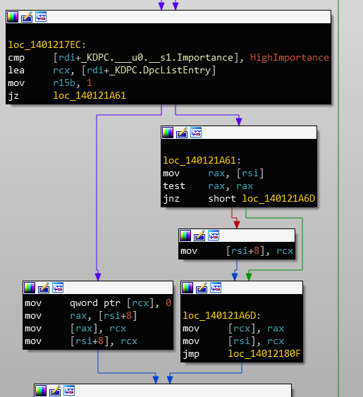
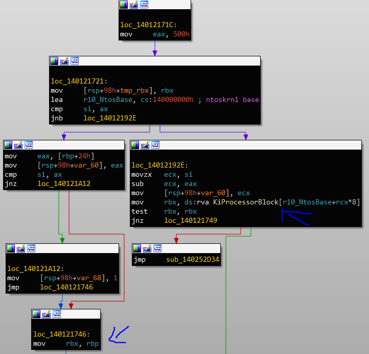
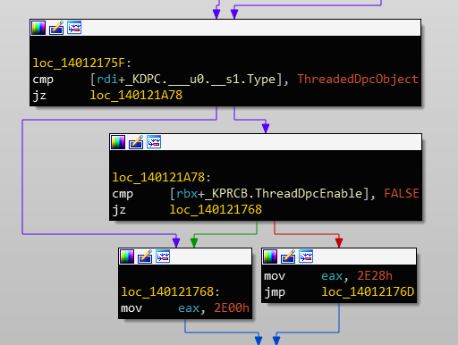

Reversing DPC: KeInsertQueueDpc
Exercise:
Explain how the following functions work: KeInsertQueueDpc, KiRetireDpcList, KiExecuteDpc, and KiExecuteAllDpcs. If you feel like an overachiever, decompile those functions from the x86 and x64 assemblies and explain the differences.
If I want to explain the complete solution I’ll have to divide this exercise to 2 posts. The first post is pretty simple.. we are going to reverse engineer KeInsertQueueDpc. In future posts we’ll continue exploring DPC and we will write code that dumps the DPC queues.
Ok so, what is a DPC?
This is the description of DPCs from MSDN:
Because ISRs must execute as quickly as possible, drivers must usually postpone the completion of servicing an interrupt until after the ISR returns. Therefore, the system provides support for deferred procedure calls (DPCs), which can be queued from ISRs and which are executed at a later time and at a lower IRQL than the ISR.
This exercise is part of the linked lists chapter so we will focus on understanding the usage of linked lists in these functions. In this solution, we’ll use static analysis and the symbols from microsoft.
First, disclamer:
People that read the book will probably notice the book shows that KDPC has a LIST_ENTRY and not SINGLE_LIST_ENTRY. This is because the DPC mechanism was changed a bit in windows 8.1. The core idea is the same, but the data structures were changed a bit. I actually did not know about this change when I started reversing windows 10 DPCs. You’ll see how I found out about this change soon..
This is the _KDPC structure (in windows 10)
//0x40 bytes (sizeof)
struct _KDPC
{
UCHAR Type; //0x0
UCHAR Importance; //0x1
volatile USHORT Number; //0x2
SINGLE_LIST_ENTRY DpcListEntry; //0x8
ULONGLONG ProcessorHistory; //0x10
PKDEFERRED_PROCEDURE DeferredRoutine; //0x18
VOID* DeferredContext; //0x20
VOID* SystemArgument1; //0x28
VOID* SystemArgument2; //0x30
PVOID DpcData; //0x38
};
struct _KDPC_DATA
{
struct _KDPC_LIST DpcList; //0x0
ULONGLONG DpcLock; //0x10
volatile LONG DpcQueueDepth; //0x18
ULONG DpcCount; //0x1c
struct _KDPC* volatile ActiveDpc; //0x20
};
struct _KDPC_LIST
{
struct _SINGLE_LIST_ENTRY ListHead; //0x0
struct _SINGLE_LIST_ENTRY* LastEntry; //0x8
}; The DPC usage pattern in code is simple: Initialize the KDPC object with KeInitializeDpc and queue it with KeInsertQueueDpc. The first relevant piece of information we have from this structure definition is the “DpcListEntry” member of the DPC object. Notice it is defined as SINGLE_LIST_ENTRY. It’s used to save a pointer to the next DPC object in the queue.
The DpcData structure represents a queue of DPC objects. the KDPC object has a pointer to a member called DpcData. Before windows 8.1, this was a pointer to the KDPC_DATA structure. It was changed a bit - we’ll see.
The DeferredRoutine is the actual routine that should be executed. The definition is as follows:
VOID CustomDpc(
_In_ struct _KDPC *Dpc,
_In_opt_ PVOID DeferredContext,
_In_opt_ PVOID SystemArgument1,
_In_opt_ PVOID SystemArgument2
)
{ ... }We can see the DeferredContext, SystemArgument1 and SystemArgument2 members of the KDPC object. We can assume these members come from the DPC object that is executed.
Let’s start by analyzing KeInsertQueueDpc. So, as always, we define guiding questions. we’ll try to focus on the linked list usage inside the function:
- How does KeInsertQueueDpc queues the KDPC object and where?
- How does the Importance member of the KDPC object influence the execution of this function?
Guiding questions may be added along the way. Ok so let’s start by answering the first question. Where do we start? Simply start reading the KeInsertQueueDpc disassembly from top to bottom? No - we are only interested in the queueing process.
To answer this question efficiently, we will start by finding the usage of “DpcListEntry” in KeInsertQueueDpc.
To do this, we need to understand how KeInsertQueueDpc uses the KDPC object. This is the signature of KeInsertQueueDpc from MSDN:
BOOLEAN KeInsertQueueDpc(
PRKDPC Dpc,
PVOID SystemArgument1,
PVOID SystemArgument2
);Let’s look at the disassembly:
KeInsertQueueDpc:
sub rsp, 38h
xor r9d, r9d
mov byte ptr [rsp+20h], 0
call KiInsertQueueDpc
add rsp, 38h
retnOh, KeInsertQueueDpc is a wrapper for KiInsertQueueDpc. We can see the first 3 arguments (rcx, rdx, r8) are passed as is to this function. These arguments are not important for us right now because the current task is to find the usage of _KDPC.DpcListEntry. The KDPC structure is passed as the first argument, meaning it’s in rcx.
The first usage of the KDPC argument is at the beginning of the function:
movzx esi, word ptr [rcx+2]To figure out the structure member inside KDPC that is accessed we use the T shortcut in IDA. To use this shortcut verify that this structure is defined in the database in the Structures View. Using IDA we find this is the used member:
movzx esi, [rcx+_KDPC.Number]Clearly this is not DpcListEntry. Let’s continue looking at the rcx register.
mov rdi, rcx
..
..
mov rcx, cr8Ok in this snippet we can see that the DPC object is saved in rdi. Later on, rcx is overridden with another value. Let’s inspect the usage of the rdi register in the function:
test [rdi+_KDPC.ProcessorHistory], rax
jz loc_140121A26Let’s look at the next usage..
cmp [rdi+_KDPC.Type], 0x1A
jz loc_140121A78What is 0x1A? We can use the M shortcut of IDA to find the enum symbol:
cmp [rdi+_KDPC.Type], ThreadedDpcObject
jz loc_140121A78Ok, what is ThreadedDpcObject?
“A threaded DPC is a DPC that the system executes at IRQL = PASSIVE_LEVEL. An ordinary DPC preempts the execution of all threads, and cannot be preempted by a thread or by another DPC. If the system has a large number of ordinary DPCs queued, or if one of those DPCs runs for a long time, every thread will remain paused for an arbitrarily long time. Thus, each ordinary DPC increases system latency, which can hurt the performance of time-sensitive applications, such as audio or video playback. Conversely, a threaded DPC can be preempted by an ordinary DPC, but not by other threads. Therefore, you should use threaded DPCs rather than ordinary DPCs—unless a particular DPC must not be preempted, not even by another DPC.“
Ok this may be interesting for our original question, so we add the following question to our guiding questions:
Does using a threaded DPC object influence the way it’s inserted to the queue?
Let’s continue looking for usages of rdi.
mov rcx, [rbp+2D90h]
cmovnz rcx, rax
xor eax, eax
lock cmpxchg [rdi+_KDPC.DpcData], rcxOk.. Looks like the DpcData member is set to something. We will inspect this later, let’s find DpcListEntry first. Let’s add the following question to our list of questions:
What is the value of KDPC.DpcData after the function call?
Ok let’s see the next usage:
mov [rdi+_KDPC.SystemArgument1], rdx
mov [rdi+_KDPC.SystemArgument2], r8the SystemArgument1 and SystemArgument2 function parameters are saved in the KDPC structure.
Ok let’s see the next usage:

Finally! It’s a usage of the DpcListEntry member. Looks like the DPC object entry is saved in a list originated in “rsi”. Let’s trace rsi to understand what is it’s value:
lea rsi, [rbx+rax]Ok, what are the values of rbx and rax?
Let’s start with rbx:

Ok - the value of rbx can come from 2 locations:
- KiProcessorBlock[rcx]: We don’t know what is KiProcessorBlock yet.
- the rbp register
The rbp register gets it’s value from:
mov rbp, gs:20hIn kernel mode, gs contains a pointer to the _KPCR structure. This is a per processor structure that contains information about state of the current CPU. We can look for the structure member:
mov rbp, gs:_KPCR.CurrentPrcbThis is the pointer to the _KPRCB (Processor Control Block) which is a sub-structure inside the _KPCR. Seems like the KiProcessorBlock array also contains pointers to the _KPRCB structures. We can verify that by debugging the machine and looking at the content of KiProcessorBlock (I already know KiProcessorBlock so I won’t do it but you’re welcome to try).
Now we now rbx contains a pointer to the Prcb but let’s figure out the logic of the image above. The value is taken from the KiProcessorBlock[si - 0x500] if si is higher than 0x500. If not, the value is taken from the gs:CurrentPrcb - the current CPU.
The value of si is Dpc.Number at the beginning of the function:
movzx esi, [rcx+_KDPC.Number]Now we can see: This code decides which CPU is the target CPU of the DPC. The Prcb of that CPU is taken and it’s used to save DpcListEntry - seems logical.
But what is this 0x500? We can see at KeSetTargetProcessorDpcEx:
set_target_processor
So if we return back to our original instruction we tried to figure out:
lea rsi, [rbx_DpcTargetPrcb+rax]Let’s see what is the value of rax -

Ok so this is equal to the following logic:
if (Dpc.Type == ThreadedDpcObject && DpcTargetPrcb.ThreadDpcEnable) {
PrcbOffset = 0x2e28;
} else {
PrcbOffset = 0x2e00;
}Let’s look what are these offsets in KPRCB:
ULONGLONG PrcbPad41[6]; //0x2dd0
struct _KDPC_DATA DpcData[2]; //0x2e00
VOID* DpcStack; //0x2e50Ok! Seems logical. The DpcData is an array of 2 elements. based on this we can conclude that:
- The Prcb of the target CPU is taken (Using Dpc.Number)
- If the DPC object is a Threaded DPC and Threaded DPC are enabled, the threaded DPC queue is fetched. (The second element)
- Else the regular DPC queue is fetched. (The first element in the DpcData array.)
Ok, let’s return to the original reason we wanted to understand what is the value of rsi. Now we know rsi points to the correct DpcData structure that describes the queue of Dpcs.
Ok so until now, we know the following code:
// ....
//
// Fetch the PRCB of the target CPU
//
PKPRCB TargetCpuPrcb;
if (Dpc->Number >= 0x500) {
//
// The user called KeSetTargetProcessorDpc to change the target CPU.
//
ULONG CpuId = Cpu->Number - 0x500;
TargetCpuPrcb = KiProcessorBlock[CpuId];
} else {
//
// Get the current CPU
//
TargetCpuPrcb = KeGetCurrentPrcb();
}
// ....
//
// Find the target DPC queue based on the type of the DPC
//
PKDPC_DATA TargetDpcQueue;
if (Dpc.Type == ThreadedDpcObject && DpcTargetPrcb.ThreadDpcEnable) {
TargetDpcQueue = TargetCpuPrcb.DpcData[1]; // offset 0x2e28
} else {
TargetDpcQueue = TargetCpuPrcb.DpcData[0]; // offset 0x2e00
}
// ....
//
// Queue the DPC
//
if (Dpc->Importance == HighImportance) {
//
// Insert Head - because it's more important
//
if (!TargetDpcQueue.DpcList.ListHead.Next) {
// probably means the list is empty..
// we need to maintain the LastEntry member
// initialize the LastEntry to point to the first entry.
TargetDpcQueue.DpcList.LastEntry = DpcListEntry;
}
DpcListEntry->Next = &TargetDpcQueue.DpcList.ListHead->Next;
TargetDpcQueue->DpcList.ListHead->Next = DpcListEntry;
} else {
//
// Insert Tail
//
DpcListEntry->Next = NULL;
TargetDpcQueue->DpcList.LastEntry->Next = DpcListEntry;
TargetDpcQueue->DpcList.LastEntry = DpcListEntry;
}Ok, so I think we have answers to our questions:
- How does KeInsertQueueDpc queue the KDPC object and where?
- How does the Importance member of the KDPC object influence the execution of this function?
- Does using a threaded DPC object influence the way it’s inserted to the queue?
Each CPU has 2 queues - one for threaded DPC objects and one for normal DPCs. The DpcData member of the PRCB structure holds these queues. The queues are represented by the KDPC_DATA structure. Under KDPC_DATA there’s a structure named KDPC_LIST and it holds two pointers: ListHead and LastEntry. The queue is represented using a singly linked list.
When inserting a DPC object into the queue, KeInsertQueueDpc checks the importance field. If the importance is HighImportance, the DPC object is inserted into the head of the list. If not, the DPC object is inserted at the end of the list.
Ok so now we have answers based on partial inspection of KeInsertQueueDpc. These answers are not full - we may missed some information. For example, we haven’t checked if the Importance field is used elsewhere in the function - it could influence other things. Same thing for the ThreadedDpcObject. So we have to continue looking at references to the Importance field to give a full answer. Currently we are satisfied with our answer because it’s all needed to understand the linked lists inside this function.
Let’s continue to the next question we had: What is the value of KDPC.DpcData after the function call?
Ok so the first snippet that changes the DpcData is right here:
mov r10d, [rsp+98h+TargetCpuNumber]
mov eax, 1
cmp r10d, [rbp_SourcePrcb+_KPRCB.Number]
mov rcx, [rbp_SourcePrcb+_KPRCB.IsrDpcStats]
cmovnz rcx, rax ; if it's a different CPU move rax into rcx else move IsrDpcStats
xor eax, eax ; the value of RCX
lock cmpxchg [rdi+_KDPC.DpcData], rcx
jnz short loc_14012181AYou may wonder why the IsrDpcStats structure is saved in the DpcData member? Well, I wondered too. This is a bit out of scope but I started analyzing IsrDpcStats and the DpcData member of the KDPC object AND it turns out that the DpcData member does not point to the KDPC_DATA structure anymore! In windows 8.1 microsoft changed the implementation of KDPC a bit and the DpcData member is used now to save a pointer to the IsrDpcStats structure, I’ll not dive into this though I recommend the courious readers to set hardware breakpoints and try to understand how he IsrDpcStats structure is used;)
This change makes finding the pointer to the KDPC_DATA more annoying since the only place we can find it is in the KPRCB.. We’ll see how this can be done (reliably?) in the third part of the solution.
Next time we’ll talk about the way DPC objects get executed.